|
VVV
- Roda JC (1-0) 30 juli 2005
|
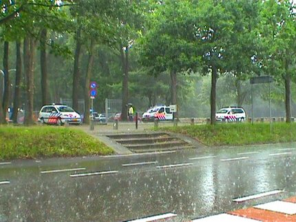
Flinke regenbuien en een file op de Kaldenkerkerweg plus het zoeken naar
een parkeerplaatsje leidde er toe dat we te laat kwamen.
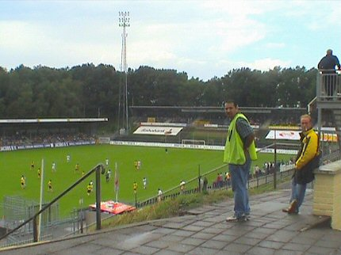
Jans van VVV blijkt al gescoord te hebben in de 7e minuut.
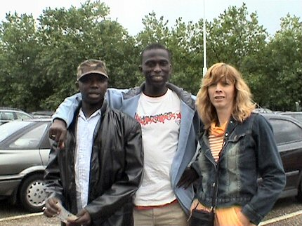
Op zoek naar een kaartje komen we deze homies van Edrissa tegen.
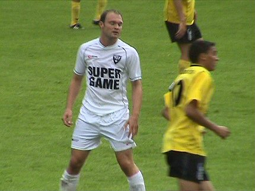
Na VVV en Fortuna heeft nu ook Roda JC SUPERGAME als shirtsponsor.
Of
zouden ze bij Roda weer eens de uit-shirtjes vergeten hebben?
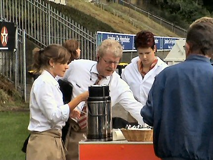
De mobiele koffie- en ijsco brigade. Bier en overige versnaperingen
moest je
zelf halen bij de goed geoutilleerde maar dure catering.
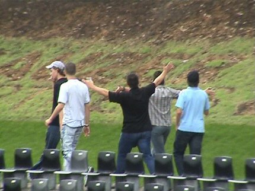
VVV bood de bezoekers maximale gastvrijheid. Er was vrije plaatskeuze en
je mocht overal komen (bijna overal).
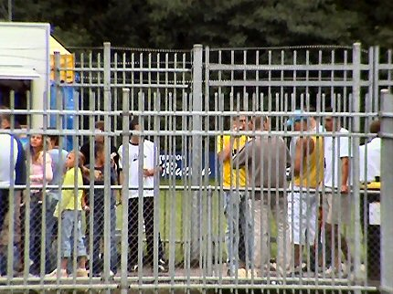
Jammergenoeg was het supportershome voor de gelegenheid gesloten. Dit
is immers de plek waar echt bier getapt wordt, in echt glas.
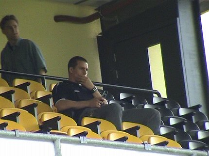
Diego Jongen helemaal alleen op de tribune.
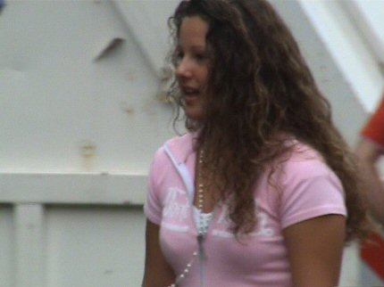
Venloos maedje. 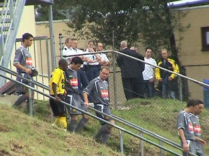
De koerier is gearriveerd met de juiste shirtjes.
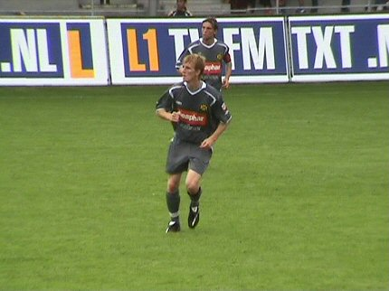
Ken Leemans op het veld van zijn voormalige werkgever.
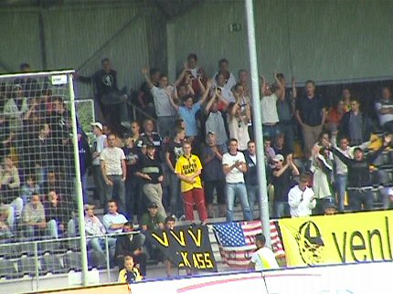
Sfeergroep op de oosttribune.
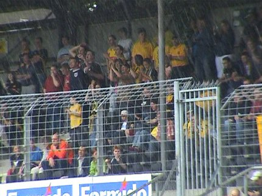
De helft van de Rodasupporters zat in het gastenvak, de rest stond op oost
of langs de noordzijde.
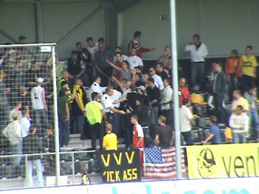
Schermutselingen op oost tussen Roda- en VVV-supporters. Politie komt in
het vak. 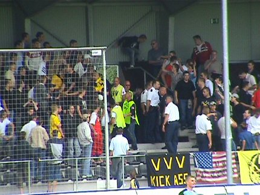
Het blijft nog een tijdje onrustig.
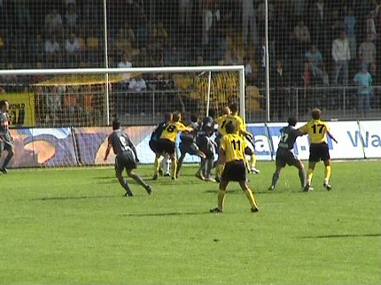
In de eerste helft speelde Roda met het "tweede" team. Na de rust
kwamen
meer A-spelers binnen de lijnen en werd het spel beter. Niettemin
waren er
regelmatig goede kansen voor VVV dat excelleerde met goed
positiespel.
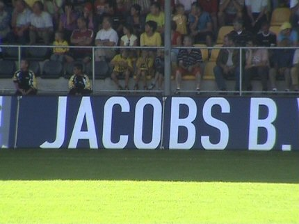
Ondanks de enorme reclame geen Basje Jacobs gezien.
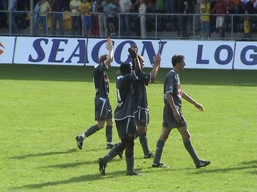
Roda verliest van een eerste divisie-club. Huub heeft nog veel werk te doen.
De trainer was er overigens niet bij vandaag.
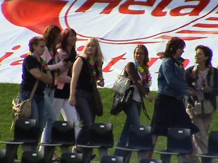
Vreugde bij het Venloose vrouwenfront.
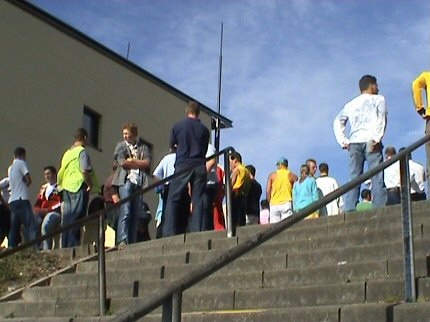
Het supportershome is nog steeds dicht. Bovenaan de trappen gaan de
supporters van beide clubs op handtekeningenjacht.
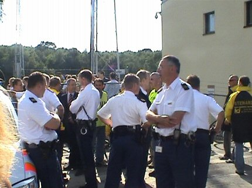
Zo ook de agenten.
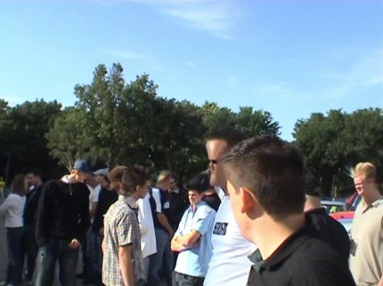
Er werd 1 Rodasupporter meegenomen om een verklaring af te leggen.
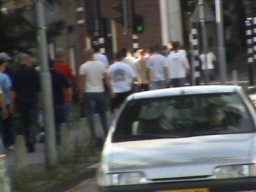
De groep loopt richting station.
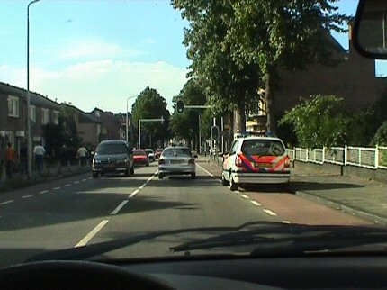
Een politie-auto blijft de groep het gehele traject volgen.
© Koempels Pleasure Dome
|